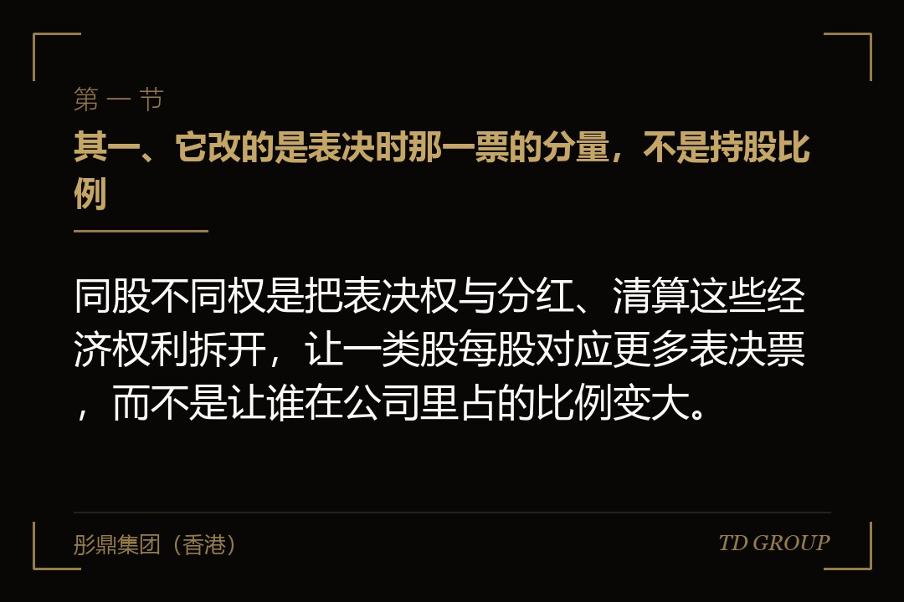
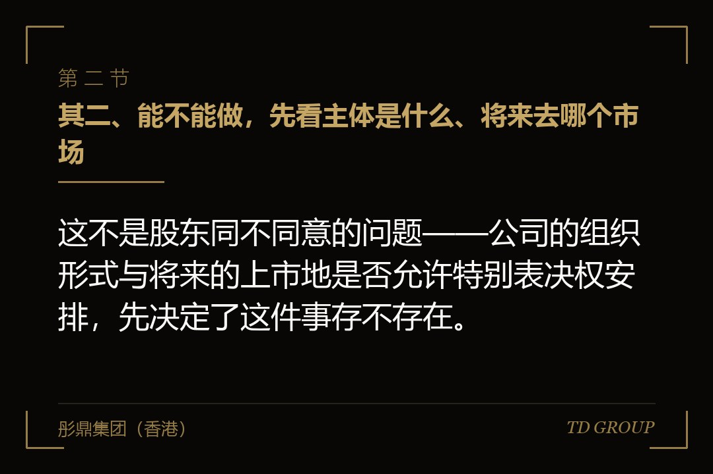
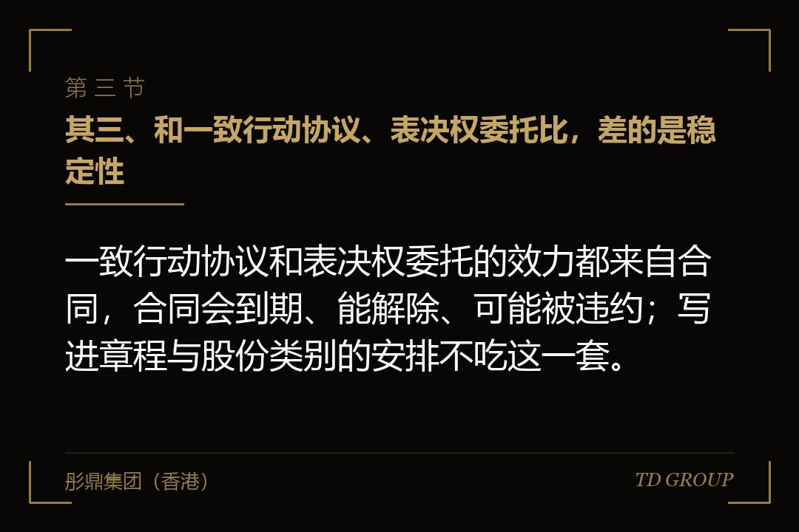

其一、它改的是表决时那一票的分量，不是持股比例

结论先行：同股不同权是把表决权与分红、清算这些经济权利拆开，让一类股每股对应更多表决票，而不是让谁在公司里占的比例变大。
误读几乎都出在这里。创始人以为拿到那一类股就等于股份变多了，其实分红照旧按持股比例算，公司被卖掉时分钱按持股比例算，清算时的顺位也是。变的只有一件事：开会举手的那一刻，他那一票算几票。
打个比方，像小区的业主大会。每户按建筑面积交物业费、按面积分摊公共收益，这一条没有动；动的是开会表决的时候，有几户人家一票顶几票。钱的分法没变，说话算数的人变了。
搞混这一点的直接后果是谈判目标错位。创始人花了整轮的力气去争一个不影响分钱的东西，却在真正影响分钱的条款上一路让步，回头才发现两头都没占着。
有家做连锁口腔诊所的公司，创始人设了特别表决权那一类股之后，一直以为分红也会跟着票数走。第二年分配方案报上来，他拿到的还是按持股比例算的那个数，跟设之前一分不差。
其二、能不能做，先看主体是什么、将来去哪个市场

结论先行：这不是股东同不同意的问题——公司的组织形式与将来的上市地是否允许特别表决权安排，先决定了这件事存不存在。
境内这一层，不同组织形式的空间本来就不一样。有限责任公司在表决办法上留有较大的章程自治余地，出资比例之外可以另行约定；而股份有限公司的表决规则要严格得多，一股一票是基础，特别表决权的适用有专门的条件和范围限制。同一件事，公司是什么组织形式，答案就不同。
真正成熟的双重股权制度，更多是长在境外控股架构和特定的上市规则里。允许这类安排的市场有自己的准入条件与配套要求，不允许的市场就是不允许，跟公司签过什么协议无关。具体条件与要求各地不同、也在调整，以主管机关与交易所当时有效的规则为准。
有家做农业植保无人机服务的公司，创始人两年前在境内主体的章程里写了一条表决权特殊安排，觉得这事已经办妥了。等到搭境外架构准备申报，境外那层控股公司是新设的、章程是另一套，原来那一条根本没有跟上来。
所以判断顺序常常是反的。不是先决定要不要做AB股、再去找地方落地；而是先看主体摆在哪、将来去哪个市场，这件事的可行性和代价才有答案。离岸主体怎么选另有专文，这里只强调一点：它是架构问题，不是条款问题。
其三、和一致行动协议、表决权委托比，差的是稳定性

结论先行：一致行动协议和表决权委托的效力都来自合同，合同会到期、能解除、可能被违约；写进章程与股份类别的安排不吃这一套。
集中表决权的土办法主要有三种：签一致行动协议约定表决时保持一致、签不可撤销的表决权委托、把小股东装进有限合伙型持股平台由创始人担任执行事务合伙人统一行使表决。三种都能在一段时间里把票拢住，成本也低。
它们的弱点是同一个。合同有期限，期限一到自动松开；合同的一方有退出通道，人一走那张票就跟着走；有人不按约定投票，事后能追责，可那次表决已经过去了。一致行动协议怎么才写得住，另有专文。
股权类别层面的安排不一样。表决票的倍数是那一类股天生带的属性，写在章程和股份本身上，不需要在每次表决前重新取得一次同意，也不存在某位股东今天不配合就落空的问题。
有家做工业气体配送的公司，创始人靠一份一致行动协议撑了几年控制权。协议签的是五年期，到期前半年他才想起来续，而当初签字的两位小股东里有一位早已把股权转给了别人。受让方不是协议当事人，什么都不必做。
其四、落日条款：这份控制权不是永久的，也基本上不能卖
结论先行：这类安排普遍带触发失效的情形——创始人离任、身故、丧失行为能力、把股份转出约定范围，多出来的票就自动变回普通的一票。
多数人只听过"一股顶多票"，没听过后面那半句。市场接受这类结构是有前提的：它的正当性来自"这家公司眼下需要这个人继续掌舵"，所以人一旦不在那个位置上，多出来的表决权就失去了理由。
落地写法通常是自动转换：出现约定情形时，那一类股按约定的方式转成普通股，不需要谁再去开会决定。常见的触发情形包括不再担任特定职务、身故或丧失行为能力、把股份转让给约定范围之外的人，有的还会另外约定一个总的期限。
由此推出一个很多人没意识到的结论：这份控制权基本上是不能卖的。那一类股在转让给外部受让方的那一刻就变回普通股，所以"我手上的股比别人的值钱"这个想法，在真正的交易里通常不成立。
有家做医疗器械灭菌服务的公司，创始人后来想转一部分股权给一位老同学套现。谈价时对方问了一句：转过来之后还是多票的那一类吗。他回去翻章程才知道不是，价格当场就谈不下去了。
同样的道理也适用于交接。这类安排既然绑定在特定的人身上，它就不是一份能直接留给下一代的东西——想让控制权跨代延续，要另外设计，那属于传承治理的题目。
其五、投资方为什么会同意，同意的时候又要回了什么
结论先行：投资方让渡的是股东会上那一票的分量，换回来的是一整套写在协议里的否决与保护，控制权没有消失，只是换了形式。
表面上看投资方吃亏：钱是他出的，票却比持股比例少。但机构投资人真正在意的从来不是日常经营谁拍板，而是别在几件要命的事情上被绕过去。表决票让出去了，他会在别处补回来。
补的地方通常是同意事项清单：增资、股权转让、重大资产处置、对外担保、变更主营业务、利润分配这些条目，未经其书面同意不得进行。清单本身怎么谈短另有专文。除此之外还有反稀释、董事席位、信息权与退出安排，一样都不会少。
有家公司的创始人守住了特别表决权那一类股，觉得这一仗打赢了。三年后他想收购一家上游供应商，钱和方案都齐了，卡在清单里"单笔超过一定金额的对外投资"那一条上，谈了半年没谈下来。他手上那些票，在这件事上一票都用不上。
所以谈判的真实图景是两头此消彼长：一头是股东会上的表决分量，一头是协议里的否决权。只盯着一头去争，多半是在另一头付了自己没算过的价。董事席位怎么谈另有专文。
其六、允许这类结构的市场，同时会要更严的治理配套
结论先行：允许特别表决权安排的市场，普遍会要求更严的治理配套与披露，等于让公司拿更高的治理成本去换那份控制权。
逻辑是对称的。既然一部分股东用较少的钱掌握了较多的票，其他股东手里那一票就被稀释了，市场必须给他们别的保护，否则这套制度撑不住。
这些配套通常落在几处：独立董事的构成与职责被抬高、关联交易要走专门的审核程序、涉及特别表决权的事项要单独披露，有些事项还会被规定必须回到一股一票来表决。具体要求各市场不同且会调整，以主管机关与交易所当时有效的规则为准。
还有一层是机构投资者自己的态度。不少机构对这类结构有内部政策，有的会在给价时体现出来，有的干脆不参与。所以它从来不是一个只有好处的选项，代价会在别的地方冒出来。
开头那家做户外储能电源的公司后来真把这套结构搭起来了。创始人事后算过一笔账才发现，为了满足配套要求补齐的独立董事、审计与内控这几项，每年多出来的固定开支不是小数——而他当初在律师那儿，一个字都没问过这些。
其七、这件事的决策窗口，比多数人想的早得多
结论先行：真正的窗口在引入头一位外部投资人之前，主体架构还能动的时候；融过两轮再想搭，等于请所有老股东同意把自己手上的票稀释掉。
原因很直白。设立这类股权结构要改章程、要重新划分股份类别，通常需要很高比例的表决通过，而且直接削弱现有股东的表决分量。公司刚设立、股东只有创始团队的时候，这件事没有人会反对；进来三五家投资人之后，每一家都有理由说不。
更麻烦的是路径依赖。境外架构一旦搭好、股权一层层持上去、员工持股平台也挂上了，再回头改底层的股份类别，牵一发动全身，时间和费用都要重新算一遍。
有家公司在第三轮之后才提出要设特别表决权那一类股，前面几轮的投资人一共七家，其中两家的投资文件里写明股份类别变更需要经其同意。光是把七家挨个聊一遍就用掉大半年，最后没能做成。
所以正确的问法不是"我现在要不要做AB股"，而是"我们将来去哪个市场、主体怎么摆、在那套规则下这件事要不要现在就留个口子"。这个问题在头一次外部融资之前问，几乎不花钱。华尔街彤鼎俱乐部里有位企业主说过一句话：他两轮融资都在争估值，回头看真正该在那两年定下来的是主体摆在哪。
其八、做不成或者来不及的公司，还剩哪几条现实的路
结论先行：绝大多数公司走不到特别表决权那一步，但控制权不是只有这一条路——章程里的提名权与议事规则、董事会构成、表决权集中，都是眼下就能动手的。
排在前面的是董事会。日常经营的拍板权在董事会而不在股东会，所以董事怎么产生、由谁提名、一共几席、哪些事项要几票通过，这几条对实际控制的影响往往比股东会那点票数更直接。董事席位怎么谈另有专文。
其次是章程里的议事规则。哪些事项走普通决议、哪些要特别决议、特别决议的通过比例定在多少、会议的法定人数怎么算、出现僵局怎么打破——这些条款在设立时写进去几乎不花钱，事后再改就要挨家去请同意。
再次是把散落的票集中起来。员工与小股东通过持股平台间接持股、由创始人担任执行事务合伙人统一行使表决，愿意跟着走的老股东可以签一致行动或者不可撤销的表决权委托。稳定性不如股份类别层面的安排，但它们现在就能做，而且不挑注册地。
还有一条是在下一轮融资的谈判里，把创始人的保护性条款直接写进去：不得被无故解任、关键职位的任免要走约定程序、董事提名权与持股比例适当脱钩。这些条款不改变股份的属性，但能把最容易出事的几个节点先按住。
有家公司的创始人持股不到四成，五年里换过两轮投资人，控制权一直很稳。他手上没有任何特别表决权那一类股，靠的是章程里三条不起眼的条款：董事提名的分配办法、总经理任免的程序、以及特别决议事项的清单。
把这几件事排一排就会发现，它们都不需要等到某个市场点头，也不需要花很多钱，需要的只是在还改得动的时候有人提醒一句。那些在架构上付过一次代价的企业主，后来在俱乐部里说的往往是同一句：这件事越早想清楚，代价越小。